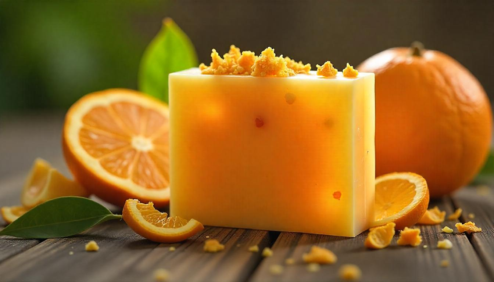

Sabun Kulit Buah Jeruk

Kenapa Pakai Kulit Buah Jeruk?
Kulit jeruk mengandung berbagai senyawa bioaktif, termasuk minyak esensial, flavonoid, dan pektin, yang memberikan manfaat kesehatan. beberapa kandungan yang ada didalam kulit jeruk yaitu:
- Minyak Atsiri
- Vitamin C
- Pektin
- Limonin
- Flavonoid
- Asam Sitrat
Keunggulan Sabun Kulit Buah Jeruk dibandingkan dengan sabun lain
Keunggulan sabun dari kulit jeruk terletak pada bahan bakunya yang alami dan bebas dari zat kimia sintetis, dibandingkan dengan sabun biasa yang sering mengandung sulfat, paraben, dan pewarna buatan, sabun kulit buah jeruk menawarkan manfaat kesehatan yang lebih unggul. Kandungan minyak esensial dari kulit jeruk memberikan efek antibakteri dan antijamur yang mampu membersihkan kulit dengan lembut, sementara vitamin C, yang berperan dalam mencerahkan kulit dan melindunginya dari kerusakan akibat radikal bebas.
Manfaat sabun kulit jeruk bagi tubuh
- Mengandung antioksidan dan vitamin C yang baik untuk kulit.
-
Membantu mengurangi jerawat dan peradangan kulit.
-
Melembabkan dan melembutkan kulit.
-
Membantu menghilangkan bau tidak sedap pada kulit
- Ramah lingkungan karena menggunakan bahan alami.